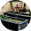
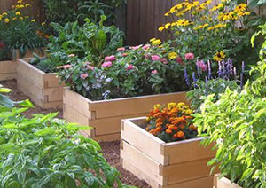

Det du skal bruge:
 Gødning
Gødning  Jord
Jord  Muld
Muld -  Højbed
 Spagnum
Spagnum  Træflis
Træflis
Lav dit eget højbed
Et højbed er rigtig god ide hvis du vil danne afgrænsninger i f.eks. køkkenhaven eller mellem køkkenhaven og din resterende have.
Ud over at give niveauforskel i haven, giver et højbed dig også en bedre arbejdsstilling, når du arbejder i bedet eller høster bær og planter.
Kendetegnede ved højbede er, at de er bygget ca. 40 cm. over almindelig jordniveau. Det betyder at et højbed hurtigere bliver tørt og varmt efter vinterens fugt og kulde. Derved kan du så tidligere i dem end i almindelige bede i jordniveau.